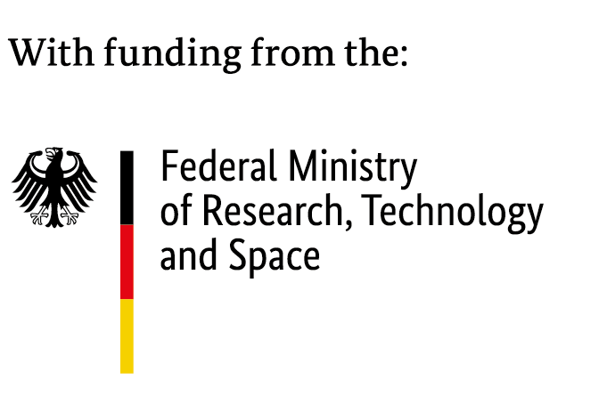

TL;DR: We reproduce and extend PoLar [ICML 2026 Oral], which lets LLMs dynamically skip or repeat transformer layers per input instead of running their fixed forward pass. We confirm its core findings across 5 models, but find its learned single-shot router always collapses back to the standard pass, and use a deeper analysis of the resulting layer “programs” to connect this routing to thalamo-cortical coordination in the brain.
Figure 1. A program-of-layers (PoLar), predicted by a lightweight router, executes a schedule of skip, keep, and repeat operations over frozen, pretrained transformer layers (left). We read this coordinating role as functionally analogous to the thalamus routing computation across cortical areas (right). A transformer’s layer order is fixed only by training, not by necessity: a model trained to run its layers in order can nonetheless be usefully executed out of that order at inference time, a flexibility the brain already has by default.
Li et al. (2026) recently showed, with a system they call PoLar, that transformers can be given an analogous flexibility if their layers are treated as a library of functions rather than a fixed sequence. Performance improves over the standard forward pass when each input is dynamically routed through an adaptive sequence of skipped or repeated contiguous layer blocks.
We reconstructed PoLar’s diagnostic MCTS in more detail than the original paper and applied it across 5 models. We reproduced several of PoLar’s findings: skipping outperformed the standard pass, repeating outperformed skipping, and combining both outperformed either alone. Shorter programs sufficed for easier questions, while harder questions required more layer repeats. However, we failed to replicate the main claim regarding their learned router for single-shot inference: its top-ranked prediction consistently collapsed back to the standard pass, even though its top-k predicted programs, taken together, did show a real accuracy gain.
Beyond reproduction, we find that a small number of generic programs are enough to solve most of the questions. We also provide a much deeper analysis of these programs’ structure and robustness: for example, we found that programs that correct errors are highly brittle — undoing even a single edit inside a program typically breaks the correction. Connecting this to the brain’s routing mechanisms, PoLar mirrors principles of thalamo-cortical coordination between cortical-area-like transformer layers. We publicly release the dataset and code (links above).
@article{westerhoff2026repolar,
title={Programs-of-Layers in LLMs through the Lens of Cortical Areas},
author={Westerhoff, Justus and Olbrich, Stephan and Oraby, Hatem and Larkum, Matthew Evan and Gers, Felix},
journal={arXiv preprint arXiv:TODO},
year={2026},
note={Preprint / under review -- citation details not yet final}
}
Our work is funded by the Federal Ministry of Research, Technology and Space under grant number 01GQ2505A and by the Deutsche Forschungsgemeinschaft (DFG, German Research Foundation) – FIP-12 – Project-ID 528483508. Responsibility for the content of this publication lies with the author.

This page’s template is inspired by the SCAM, SynthMT, and Dyslexify project pages.